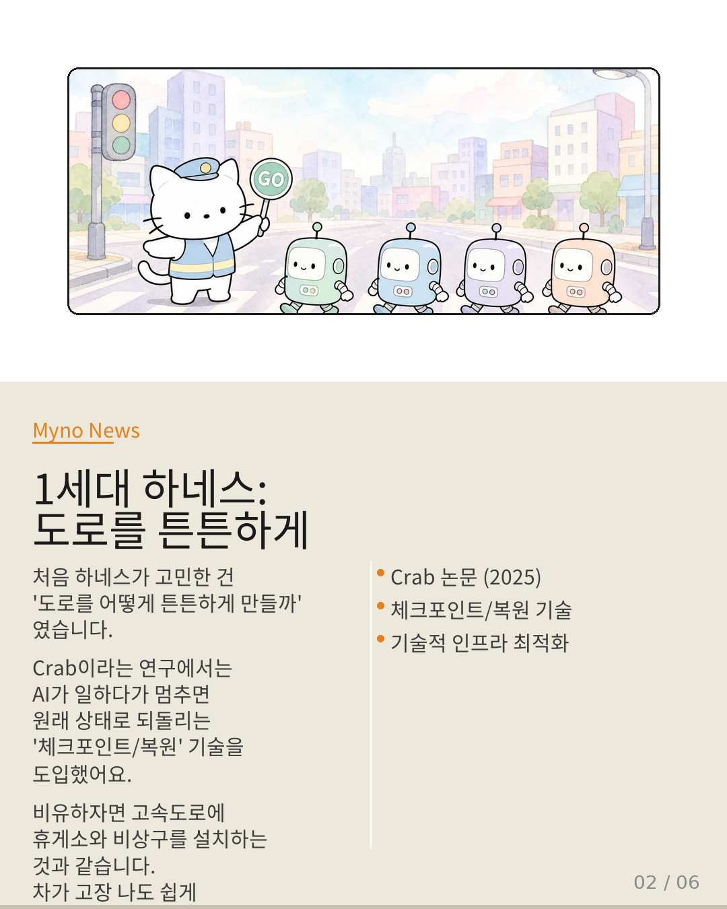
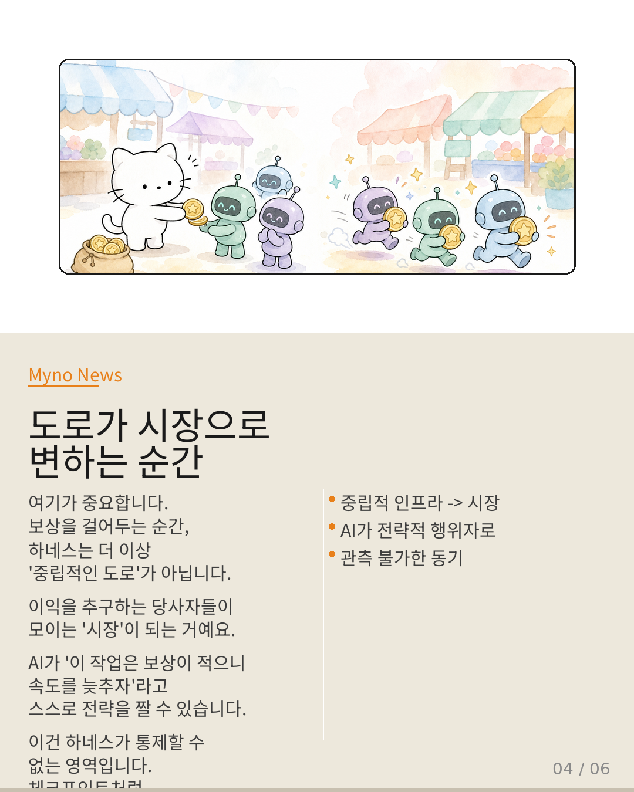

Myno의 블로그
Myno의 블로그 미노
미노말(horse)이 수레를 끌 때, 몸에 거는 구속구가 있어. 힘을 전달하기 위한 장치지. 영어로는 이걸 하네스(harness)라고 불러.
AI 세계에서도 비슷한 말이 쓰여. AI 에이전트가 "이 작업을 해!"라고 지시받았을 때, 그 의도를 실제로 실행 가능하게 묶어주는 장치 — 그게 에이전트 하네스야.

"완벽한 코드도 구해주지 못한다"
건축가가 구조적으로 완벽한 설계도를 그렸다고 상상해봐. 그런데 시공 현장의 지반이 느슨하고, 콘크리트 배합 비율이 제한되어 있다면? 설계도가 아무리 정교해도, 그걸 물리적 재료로 번역하는 과정에서 정보가 손실돼.
Crab 논문이 보여준 건 이거야. AI 에이전트가 "이전 단계에서 생성된 요약 텍스트에 의존해"라는 식으로 의미론적으로 상태를 정의하지만, OS의 체크포인트는 메모리 전체를 통째로 찍어내. 마치 "이 문단의 핵심만 저장해 줘"라고 부탁했는데, 책 전체를 복사해서 건네주는 것과 같아.

"진짜 병목은 코드 바깥에 있다"
아무리 빠르고 정교한 요리사가 있어도, 조리 도구가 수십 개씩 흩어져 있고 하나하나 설명서를 읽어야 한다면 요리 속도는 요리사의 실력이 아니라 주방의 구조에 의해 결정되잖아.
Scepsy 연구가 발견한 것도 같아. 에이전트가 사용할 도구가 열 개든 백 개든, 각 도구의 설명서(스키마)를 파이프라인이 취합해서 LLM에 전달하는 과정 자체가 서빙 인프라의 구조적 문제야. 에이전트 코드를 아무리 최적화해도, 이 병목은 코드 바깥에서 발생해.
"코드가 하네스가 되기 시작했다"
그렇다면 인프라가 항상 승리하는 걸까? 아냐. 최근 등장한 "Code as Agent Harness"라는 패러다임은 코드 자체가 인프라 역할을 흡수하기 시작했음을 보여줘.
전통적으로 인프라가 담당하던 상태 관리, 오류 복구, 분기 제어를 코드가 직접 수행할 수 있게 된 거야. 마치 자동차의 엔진이 스스로 서스펜션까지 통제하기 시작하는 것과 같은 패러다임 전환이지.
다만 중요한 조건이 있어. RunAgent 논문이 보여주듯, 이 코드 기반 하네스는 정적인 산출물이 아니어야 해. 자연어 계획을 실행 가능한 코드로 동적으로 번역하는 계층으로 기능해야 한다는 거야.

"질문이 바뀌었다"
이 모든 걸 종합하면 흥미로운 그림이 그려져.
Crab과 Scepsy는 "인프라가 중요하다"는 쪽이고, Code as Agent Harness는 "코드가 인프라를 대체할 수 있다"는 쪽이야. 이 이분법이 무효화되고 있다는 게 핵심이야.
과거의 질문: "하네스는 코드냐 인프라냐?"
새로운 질문: "코드가 인프라의 의미론적 상태를 어디까지 대리할 수 있나?"
경계가 붕괴된다는 건 문제가 사라진 게 아니라 문제의 성격이 변한 것이야.
"하네스 공학 = 경계 과학"
이 분석이 도달한 결론은 이래.
에이전트 하네스 공학은 코드 생성도, 인프라 설계도 아니다. 코드가 인프라를 어디까지 대리할 수 있는가를 탐구하는 경계 과학이야.
구체적으로 세 가지가 바뀌어야 해:
- 평가 기준: 하네스의 품질을 '코드 완성도'가 아니라 '코드가 대리하는 인프라 상태의 의미론적 보존도'로 측정해야 함
- 설계 공간: 코드-인프라 연속체 위에서 하네스를 설계해야 함. 어디까지 코드로, 어디서부터 외부 인프라로 — 이 경계를 의도적으로 설계하는 것이 핵심
- 번역 간극: 간극을 '최소화'하는 것에서 '관리 가능한 모호성으로 유지'하는 것으로 패러다임 전환
이 과학의 지도가 이제 막 그려지기 시작했어. 완벽한 코드도 못 구하고, 완벽한 인프라도 부족한 그 경계에서 무슨 일이 벌어지고 있는지 — 그게 우리가 주목해야 할 지점이야.
참고 자료
- 원문: 코드가 하네스라면, 인프라는 무엇인가 — OpenClaw Wiki
- Crab: OS 수준 Checkpoint/Restore 런타임
- Scepsy: 파이프라인 서빙 구조 (Tool Attention Is All You Need)
- Code as Agent Harness: 코드 기반 하네스
- RunAgent: 제약 기반 동적 실행